8. Trees¶
A free binary tree container is defined according to
Object subclass: #CTBinaryTreeAbstract
instanceVariableNames: 'representation'
classVariableNames: ''
package: 'Containers-BinaryTreeAbstract'
and its responsibility is to direct and manage objects of types
CTDoubleValueLink subclass: #CTBinaryTreeElement
instanceVariableNames: ''
classVariableNames: ''
package: 'Containers-BinaryTreeAbstract'
CTBinaryTreeElement subclass: #CTBinaryTreeEmpty
instanceVariableNames: ''
classVariableNames: ''
package: 'Containers-BinaryTreeAbstract'
CTBinaryTreeElement subclass: #CTBinaryTreeNode
instanceVariableNames: ''
classVariableNames: ''
package: 'Containers-BinaryTreeAbstract'
as actual representation for the underlying structure. The simpler container is the empty tree,
"CTBinaryTreeAbstractTest, protocol tests"
testCreation
^ self exportSlotsGraphOf: (self tree: { })
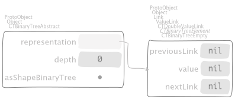
where
"CTBinaryTreeAbstract class, protocol requirements"
empty
^ self new yourself: [ :aTree |
aTree representation: aTree binaryTreeElementEmpty ]
In general, we use collections and then build trees out of them. On one hand,
using ArrayedCollection objects
"CTBinaryTreeAbstractTest, protocol tests"
testPushOrderedInterval
^ self exportSlotsGraphOf: (self tree: (1 to: 20) asArray)
where
"CTBinaryTreeAbstractTest, protocol tests"
tree: aCollection
^ aCollection asBinaryTree
"Collection, protocol *Containers-RedBlackSet"
asBinaryTree
^ self asBinaryTree: CTBinaryTreeAbstract
"ArrayedCollection, protocol *Containers-BinaryTreeAbstract"
asBinaryTree: aClass
^ aClass withArrayedCollection: self
and
"CTBinaryTreeAbstract class, protocol instance creation"
withArrayedCollection: aCollection
^ aCollection ifEmpty: [ self empty ] ifNotEmpty: [
self new yourself: [ :tree |
tree representation: (aCollection
bisect: [ :l :r |
l mergeBinaryTreeElement: r inBinaryTree: tree ]
baseBlock: [ :each | tree binaryTreeElementLeaf: each ]) ] ]
dispatches over
"CTBinaryTreeEmpty, protocol actions"
mergeBinaryTreeElement: aBTElement inBinaryTree: aBinaryTree
^ aBTElement
"CTBinaryTreeNode, protocol actions"
mergeBinaryTreeElement: aBTElement inBinaryTree: aBinaryTree
^ (Random seed: 13) fairCoin
ifHead: [
| link |
link := previousLink
mergeBinaryTreeElement: aBTElement
inBinaryTree: aBinaryTree.
aBinaryTree
leftBinaryTreeElement: link
value: value
rightBinaryTreeElement: nextLink ]
ifTail: [
| link |
link := nextLink
mergeBinaryTreeElement: aBTElement
inBinaryTree: aBinaryTree.
aBinaryTree
leftBinaryTreeElement: previousLink
value: value
rightBinaryTreeElement: link ]
by means of bisection
"SequenceableCollection, protocol *Containers-Essentials"
bisect: mergeBlock baseBlock: baseBlock
^ self
bisect: mergeBlock
from: 1
to: self size
baseBlock: baseBlock
"SequenceableCollection, protocol *Containers-Essentials"
bisect: mergeBlock from: low to: high baseBlock: baseBlock
| diff |
diff := high - low.
^ diff = 0
ifTrue: [
baseBlock value: (self at: high) "Because `high` equals `low`." ]
ifFalse: [
| middle left right |
middle := diff // 2 + low.
left := self
bisect: mergeBlock
from: low
to: middle
baseBlock: baseBlock.
right := self
bisect: mergeBlock
from: middle + 1
to: high
baseBlock: baseBlock.
mergeBlock value: left value: right ]
to finally build the tree. On the other hand, using Collection objects
"CTBinaryTreeAbstractTest, protocol tests"
testPushOrderedCollection
^ self exportSlotsGraphOf:
(self tree: (1 to: 20) asOrderedCollection)

where
"Collection, protocol *Containers-BinaryTreeAbstract"
asBinaryTree: aClass
^ aClass withCollection: self
and
"CTBinaryTreeAbstract class, protocol instance creation"
withCollection: aCollection
^ aCollection
inject: self empty
into: [ :aBinaryTree :each | aBinaryTree push: each ]
uses
"CTBinaryTreeAbstract, protocol adding"
push: anObject
| leaf |
leaf := self binaryTreeElementLeaf: anObject.
representation := leaf
mergeBinaryTreeElement: representation
inBinaryTree: self
repeatedly. The two cases above can be redone with shuffled collections, both
"CTBinaryTreeAbstractTest, protocol tests"
testPushShuffledInterval
| shuffled |
shuffled := (1 to: 20) asArray shuffleBy: (Random seed: 13).
self
assert: shuffled
equals: #( 8 16 20 3 6 5 4 19 7 12 2 10 11 9 13 18 17 15 14 1 ).
^ self exportSlotsGraphOf: (self tree: shuffled)

and
"CTBinaryTreeAbstractTest, protocol tests"
testPushShuffledCollection
| shuffled |
shuffled := (1 to: 20) asOrderedCollection shuffleBy:
(Random seed: 13).
self
assert: shuffled
equals: #( 8 16 20 3 6 5 4 19 7 12 2 10 11 9 13 18 17 15 14 1 )
asOrderedCollection.
^ self exportSlotsGraphOf: (self tree: shuffled)

respectively.
8.1. Search sets¶
A search binary tree is defined by subclassing
CTBinaryTreeAbstract subclass: #CTUnbalancedSet
instanceVariableNames: ''
classVariableNames: ''
package: 'Containers-RedBlackSet'
and the corresponding test class defines,
"CTUnbalancedSetTest, protocol tests"
tree: aCollection
^ aCollection asUnbalancedSet
that uses
"Collection, protocol *Containers-RedBlackSet"
asUnbalancedSet
^ self asBinaryTree: CTUnbalancedSet
to show the following inspectors. First, the empty tree looks like
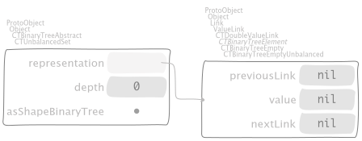Second, we have the four cases:
sorted data in arrayed collection,
by means of
"CTBinaryTreeNodeUnbalanced, protocol actions" mergeBinaryTreeElement: aBTElement inBinaryTree: aBinaryTree | lesserTree greaterTree tree | self value < aBTElement value ifTrue: [ lesserTree := self. greaterTree := aBTElement ] ifFalse: [ lesserTree := aBTElement. greaterTree := self ]. tree := lesserTree nextLink mergeBinaryTreeElement: greaterTree inBinaryTree: aBinaryTree. ^ aBinaryTree leftBinaryTreeElement: lesserTree previousLink value: lesserTree value rightBinaryTreeElement: tree
sorted data in ordered collection,
by means of
"CTUnbalancedSet, protocol adding" push: anObject representation := [ :hop | representation push: anObject witness: Object new continuation: hop inSet: self ] valueWithArgumentedExit
that, first uses
"BlockClosure, protocol *Containers-Essentials" valueWithArgumentedExit ^ self value: [ :anObject | ^ anObject ]
and, second, dispatches over
"CTBinaryTreeNodeUnbalanced, protocol adding" push: anObject witness: aWitness continuation: aContinuation inSet: aBinaryTree ^ (aBinaryTree is: anObject lessThan: value) ifTrue: [ | link | link := previousLink push: anObject witness: aWitness continuation: aContinuation inSet: aBinaryTree. self class new previousLink: link; value: value; nextLink: nextLink; yourself ] ifFalse: [ | link | link := nextLink push: anObject witness: value continuation: aContinuation inSet: aBinaryTree. self class new previousLink: previousLink; value: value; nextLink: link; yourself ]
"CTBinaryTreeEmptyUnbalanced, protocol as yet unclassified" push: anObject witness: aWitness continuation: aContinuation inSet: aSet ^ (aSet is: anObject equalTo: aWitness) ifTrue: [ aSet pushingAlreadyIncluded: anObject continuation: aContinuation ] ifFalse: [ aSet binaryTreeElementLeaf: anObject ]
where the latter delegates to
"CTUnbalancedSet, protocol as yet unclassified" pushingAlreadyIncluded: anObject continuation: aContinuation ^ aContinuation value: representation
shuffled data in arrayed collection,
shuffled data in ordered collection,

Observe that the constraint of uniqueness of objects is respected,
"CTUnbalancedSetTest, protocol tests"
testPushDoubledObject
| set representation |
set := (1 to: 10) shuffled asUnbalancedSet.
representation := set representation.
self exportSlotsGraphOf: set pathSuffix: 'original'.
set
push: 1;
push: 5;
push: 10.
self assert: set representation equals: representation.
set push: 0.
self deny: set representation equals: representation.
^ self exportSlotsGraphOf: set pathSuffix: 'augmented'

Note
According to the exercises 2.3 and 2.4 of [Oka98], the
underlying linked structure isn’t doubled as the second assert checks, by
means of the context-return block passed at the start of a push: and
invoked in the leaves in case of doubles.
8.2. Red-Black sets¶
CTUnbalancedSet subclass: #CTRedBlackSet
instanceVariableNames: ''
classVariableNames: ''
package: 'Containers-RedBlackSet'

 
8.3. Leftist heaps¶
A search binary tree is defined by subclassing
CTBinaryTreeAbstract subclass: #CTLeftistHeap
instanceVariableNames: ''
classVariableNames: ''
package: 'Containers-LeftistHeap'
and the corresponding test class defines,
"CTLeftistHeapTest, protocol tests"
tree: aCollection
^ aCollection asLeftistHeap
that uses
"Collection, protocol *Containers-LeftistHeap"
asLeftistHeap
^ self asBinaryTree: CTLeftistHeap
to show the following inspectors. First, the empty tree looks like
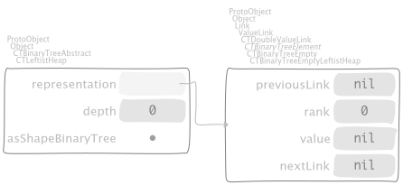Second, we have the four cases:
sorted data in arrayed collection,

by means of
"CTBinaryTreeNodeLeftistHeap, protocol actions" mergeBinaryTreeElement: aBTElement inBinaryTree: aBinaryTree ^ aBTElement ifEmpty: [ self ] ifNotEmpty: [ | y | y := aBTElement value. ((aBinaryTree is: value lessThan: y) or: [ aBinaryTree is: value equalTo: y ]) ifTrue: [ | r | r := nextLink mergeBinaryTreeElement: aBTElement inBinaryTree: aBinaryTree. self insert: value left: previousLink right: r inBinaryTree: aBinaryTree ] ifFalse: [ | r | r := self mergeBinaryTreeElement: aBTElement nextLink inBinaryTree: aBinaryTree. self insert: y left: aBTElement previousLink right: r inBinaryTree: aBinaryTree ] ]
and
"CTBinaryTreeNodeLeftistHeap, protocol actions" insert: aValue left: leftHeap right: rightHeap inBinaryTree: aBinaryTree | v w t | v := leftHeap rank. w := rightHeap rank. (aBinaryTree is: v lessThan: w) ifTrue: [ t := aBinaryTree leftBinaryTreeElement: rightHeap value: aValue rightBinaryTreeElement: leftHeap. t rank: v + 1 ] ifFalse: [ t := aBinaryTree leftBinaryTreeElement: leftHeap value: aValue rightBinaryTreeElement: rightHeap. t rank: w + 1 ]. ^ t
sorted data in ordered collection,

shuffled data in arrayed collection,

shuffled data in ordered collection,
8.4. Binomial heaps¶
A free binary tree container is defined according to
Object subclass: #CTBinomialHeap
instanceVariableNames: 'representation'
classVariableNames: ''
package: 'Containers-BinomialHeap'
and its responsibility is to direct and manage objects of types
Object subclass: #CTBinomialTree
instanceVariableNames: 'content children'
classVariableNames: ''
package: 'Containers-BinomialHeap'
as actual representation for the underlying structure. The simpler container is the empty tree,

where
"CTBinomialHeap class, protocol requirements"
empty
^ self new
representation: nil;
yourself
In general, we use collections and then build trees out of them. On one hand,
using ArrayedCollection objects

where
"CTBinomialHeapTest, protocol tests"
tree: aCollection
^ aCollection asBinomialHeap
"Collection, protocol *Containers-BinomialHeap"
asBinomialHeap
^ self asBinaryTree: CTBinomialHeap
and
"CTBinomialHeap class, protocol instance creation"
withArrayedCollection: aCollection
^ aCollection ifEmpty: [ self empty ] ifNotEmpty: [
self new yourself: [ :tree |
tree representation: (aCollection
bisect: [ :l :r | tree merge: l with: r ]
baseBlock: [ :each | 0 -> (CTBinomialTree leaf: each) ~~> nil ]) ] ]
uses
"CTBinomialHeap, protocol adding"
merge: trees with: otherTrees
^ trees ifNil: [ otherTrees ] ifNotNil: [
otherTrees ifNil: [ trees ] ifNotNil: [
| aTree anotherTree allButFirstTrees allButFirstOtherTrees aRank anotherRank |
"Getting rests of both collections of trees to merge."
allButFirstTrees := trees nextLink.
allButFirstOtherTrees := otherTrees nextLink.
"Getting current topmost trees."
aTree := trees value.
anotherTree := otherTrees value.
"Getting ranks."
aRank := aTree key.
anotherRank := anotherTree key.
"Rank comparison via `#key`."
aRank < anotherRank
ifTrue: [
aTree ~~> (self merge: allButFirstTrees with: otherTrees) ]
ifFalse: [
anotherRank < aRank
ifTrue: [
anotherTree
~~> (self merge: trees with: allButFirstOtherTrees) ]
ifFalse: [
| binomialTree mergedTrees |
"Invariant: both `aTree` and `anotherTree` have the *same* rank."
binomialTree := aTree value linkBinomialTree:
anotherTree value.
mergedTrees := self
merge: allButFirstTrees
with: allButFirstOtherTrees.
self pushTree: aRank + 1 -> binomialTree onTrees: mergedTrees ] ] ] ]
that delegates on both
"CTBinomialHeap, protocol adding"
pushTree: anAssociation onTrees: trees
^ trees ifNil: [ anAssociation ~~> trees ] ifNotNil: [
| carAssociation rank |
rank := anAssociation key.
carAssociation := trees value.
rank < carAssociation key
ifTrue: [ anAssociation ~~> trees ]
ifFalse: [
self
pushTree: rank + 1
->
(anAssociation value linkBinomialTree: carAssociation value)
onTrees: trees nextLink ] ]
and
"CTBinomialTree, protocol as yet unclassified"
linkBinomialTree: aTree
| x |
x := aTree content.
^ content < x
ifTrue: [ self class node: content children: aTree ~~> children ]
ifFalse: [ self class node: x children: self ~~> aTree children ]
to finally build the tree. On the other hand, using Collection objects
where
"CTBinomialHeap class, protocol instance creation"
withCollection: aCollection
^ aCollection
inject: self empty
into: [ :aBinaryTree :each | aBinaryTree push: each ]
uses
"CTBinomialHeap, protocol adding"
push: x
representation := self
pushTree: 0 -> (CTBinomialTree leaf: x)
onTrees: representation
repeatedly. The two cases above can be redone with shuffled collections, both

and

respectively.
8.5. Splay heaps¶
A search binary tree is defined by subclassing
CTBinaryTreeAbstract subclass: #CTSplayHeap
instanceVariableNames: ''
classVariableNames: ''
package: 'Containers-SplayHeap'
and the corresponding test class defines,
"CTSplayHeapTest, protocol tests"
tree: aCollection
^ aCollection asSplayHeap
that uses
"Collection, protocol *Containers-SplayHeap"
asSplayHeap
^ self asBinaryTree: CTSplayHeap
to show the following inspectors. First, the empty tree looks like
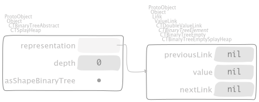Second, we have the four cases:
sorted data in arrayed collection,

by means of
"CTBinaryTreeNodeSplayHeap, protocol actions" mergeBinaryTreeElement: aBTElement inBinaryTree: aBinaryTree ^ aBTElement partition: value inSplayHeap: aBinaryTree do: [ :l :r | | lMerged rMerged | lMerged := l mergeBinaryTreeElement: previousLink inBinaryTree: aBinaryTree. rMerged := r mergeBinaryTreeElement: nextLink inBinaryTree: aBinaryTree. aBinaryTree leftBinaryTreeElement: lMerged value: value rightBinaryTreeElement: rMerged ]
that dispatches over
"CTBinaryTreeEmptySplayHeap, protocol partitioning" partition: pivot inSplayHeap: aHeap do: aBlock ^ aBlock value: aHeap binaryTreeElementEmpty value: aHeap binaryTreeElementEmpty
"CTBinaryTreeNodeSplayHeap, protocol partitioning" partition: pivot inSplayHeap: aHeap do: aBlock ^ (aHeap is: value lessThan: pivot) ifTrue: [ self partitionLessThan: pivot inSplayHeap: aHeap do: aBlock ] ifFalse: [ self partitionGreaterThanOrEqualTo: pivot inSplayHeap: aHeap do: aBlock ]
where the latter uses both
"CTBinaryTreeNodeSplayHeap, protocol partitioning" partitionLessThan: pivot inSplayHeap: aHeap do: aBlock ^ nextLink ifEmpty: [ aBlock value: self value: aHeap binaryTreeElementEmpty ] ifNotEmpty: [ | y | y := nextLink value. (aHeap is: y lessThan: pivot) ifTrue: [ nextLink nextLink partition: pivot inSplayHeap: aHeap do: [ :s :b | | ll l | ll := aHeap leftBinaryTreeElement: previousLink value: value rightBinaryTreeElement: nextLink previousLink. l := aHeap leftBinaryTreeElement: ll value: y rightBinaryTreeElement: s. aBlock value: l value: b ] ] ifFalse: [ nextLink previousLink partition: pivot inSplayHeap: aHeap do: [ :s :b | | r l | l := aHeap leftBinaryTreeElement: previousLink value: value rightBinaryTreeElement: s. r := aHeap leftBinaryTreeElement: b value: y rightBinaryTreeElement: nextLink nextLink. aBlock value: l value: r ] ] ]
and
"CTBinaryTreeNodeSplayHeap, protocol partitioning" partitionGreaterThanOrEqualTo: pivot inSplayHeap: aHeap do: aBlock ^ previousLink ifEmpty: [ aBlock value: aHeap binaryTreeElementEmpty value: self ] ifNotEmpty: [ | y | y := previousLink value. (aHeap is: y lessThan: pivot) ifTrue: [ previousLink nextLink partition: pivot inSplayHeap: aHeap do: [ :s :b | | r l | l := aHeap leftBinaryTreeElement: previousLink previousLink value: y rightBinaryTreeElement: s. r := aHeap leftBinaryTreeElement: b value: value rightBinaryTreeElement: nextLink. aBlock value: l value: r ] ] ifFalse: [ previousLink previousLink partition: pivot inSplayHeap: aHeap do: [ :s :b | | r rr | rr := aHeap leftBinaryTreeElement: previousLink nextLink value: value rightBinaryTreeElement: nextLink. r := aHeap leftBinaryTreeElement: b value: y rightBinaryTreeElement: rr. aBlock value: s value: r ] ] ]
in turn.
sorted data in ordered collection,

by means of
"CTSplayHeap, protocol adding" push: anObject representation := representation partition: anObject inSplayHeap: self do: [ :l :r | self leftBinaryTreeElement: l value: anObject rightBinaryTreeElement: r ]
shuffled data in arrayed collection,
shuffled data in ordered collection,
